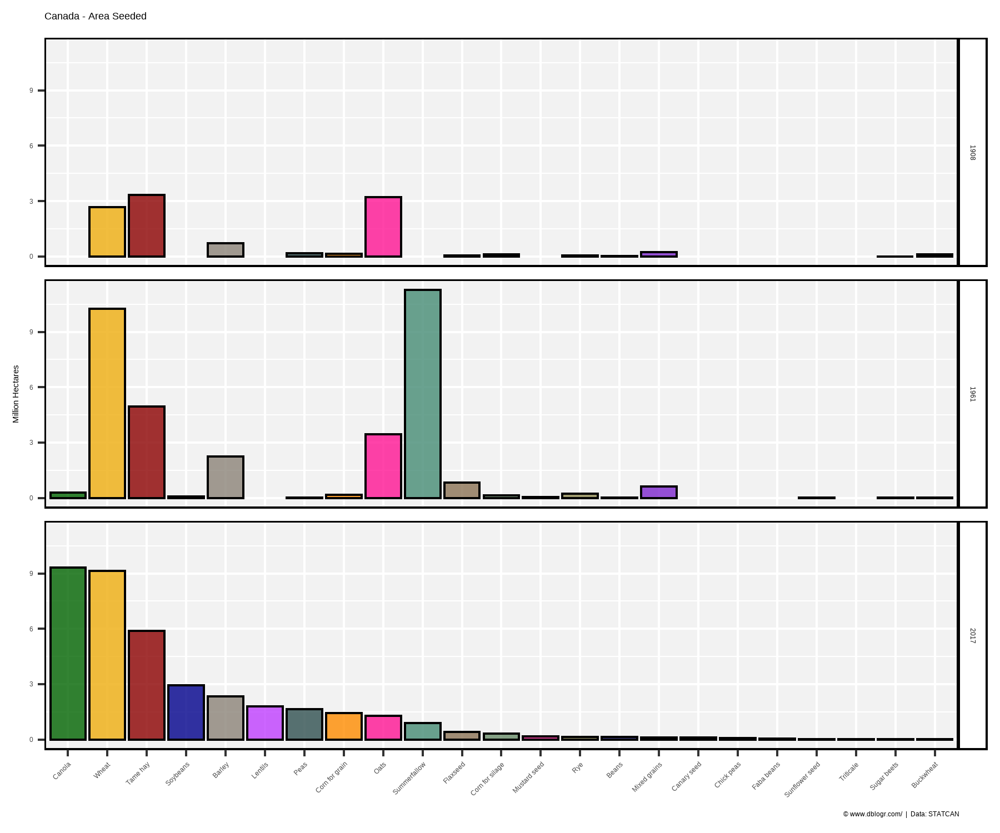
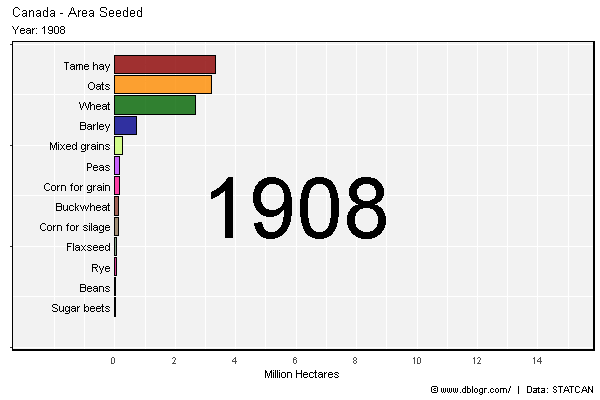
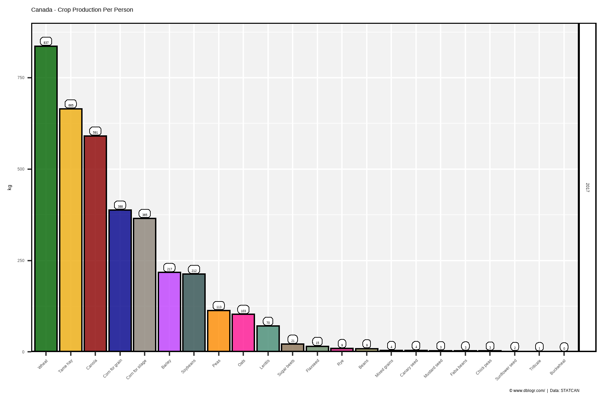

Crop Production
# Create function to determine top crops
cropList <- function(measurement, years) {
# Prep data
xx <- agData_STATCAN_Crops %>%
filter(Area == "Canada", Measurement == measurement, Year %in% years)
# Get top 15 crops from each year
topcrops <- function(x, year) {
x <- x %>% filter(Year == year) %>% arrange(desc(Value)) %>%
pull(Crop) %>% unique() %>% as.character()
}
myCrops <- NULL
for(i in years) { myCrops <- c(myCrops, topcrops(xx, i)) }
unique(myCrops)
}Crop Production 1908, 1961, 2017
# Prep data
myCrops <- cropList(measurement = "Production", years = c(2017, 1961, 1908))
xx <- agData_STATCAN_Crops %>%
filter(Area == "Canada", Year %in% c(2017, 1961, 1908),
Measurement == "Production", Crop %in% myCrops) %>%
mutate(Crop = factor(Crop, levels = myCrops),
Crop = recode(Crop, "Beans, all dry (white and coloured)" = "Beans, all dry") )
# Plot
mp <- ggplot(xx, aes(x = Crop, y = Value / 1000000, fill = Crop)) +
geom_bar(stat = "identity", color = "Black", alpha = 0.8) +
facet_grid(Year~.) +
scale_fill_manual(values = alpha(agData_Colors, 0.75)) +
theme_agData(legend.position = "none",
axis.text.x = element_text(angle = 45, hjust = 1)) +
labs(title = "Canada - Crop Production", y = "Million Tonnes", x = NULL,
caption = "\xa9 www.dblogr.com/ | Data: STATCAN")
ggsave("crops_canada_01.png", mp, width = 6, height = 5)
Crop Area 1908, 1961, 2017
# Prep data
myCrops <- cropList(measurement = "Seeded area", years = c(2017, 1961, 1908))
xx <- agData_STATCAN_Crops %>%
filter(Area == "Canada", Year %in% c(2017, 1961, 1908),
Measurement == "Seeded area", Crop %in% myCrops) %>%
mutate(Crop = factor(Crop, levels = myCrops),
Crop = recode(Crop, "Beans, all dry (white and coloured)" = "Beans, all dry") )
# Plot
mp <- ggplot(xx, aes(x = Crop, y = Value / 1000000, fill = Crop)) +
geom_bar(stat = "identity", color = "Black", alpha = 0.8) +
facet_grid(Year~.) +
scale_fill_manual(values = alpha(agData_Colors, 0.75)) +
theme_agData(legend.position = "none",
axis.text.x = element_text(angle = 45, hjust = 1)) +
labs(title = "Canada - Area Seeded", y = "Million Hectares", x = NULL,
caption = "\xa9 www.dblogr.com/ | Data: STATCAN")
ggsave("crops_canada_02.png", mp, width = 6, height = 5)
# Prep data
myCrops <- cropList(measurement = "Seeded area", years = 2017)
xx <- agData_STATCAN_Crops %>%
filter(Area == "Canada",
Measurement == "Seeded area", Crop %in% myCrops) %>%
mutate(Crop = factor(Crop, levels = myCrops),
Crop = recode(Crop, "Beans, all dry (white and coloured)" = "Beans, all dry") )
# Plot
mp <- ggplot(xx, aes(x = Crop, y = Value / 1000000, fill = Crop)) +
geom_bar(stat = "identity", color = "Black", alpha = 0.8) +
geom_text(aes(label = Year), x = 17, y = 14, size = 15) +
scale_fill_manual(values = alpha(agData_Colors, 0.75)) +
theme_agData(legend.position = "none",
axis.text.x = element_text(angle = 45, hjust = 1)) +
labs(title = "Canada - Area Seeded", y = "Million Hectares", x = NULL,
caption = "\xa9 www.dblogr.com/ | Data: STATCAN") +
# gganimate
transition_states(Year)
mp <- animate(mp, nframes = 2*(max(xx$Year) - min(xx$Year)), fps = 10, end_pause = 20)
anim_save("crops_canada_gifs_01.gif", mp, width = 600, height = 400)
Per Person
# Prep data
pp <- agData_STATCAN_Population %>%
filter(Month == 1, Area == "Canada", Year == 2017) %>%
pull(Value)
myCrops <- cropList(measurement = "Production", years = 2017)
xx <- agData_STATCAN_Crops %>%
filter(Area == "Canada", Year %in% 2017,
Measurement == "Production", Crop %in% myCrops) %>%
mutate(Crop = factor(Crop, levels = myCrops),
PerPerson = 1000 * Value / pp)
# Plot
mp <- ggplot(xx, aes(x = Crop, y = PerPerson, fill = Crop)) +
geom_bar(stat = "identity", color = "Black", alpha = 0.8) +
geom_label(aes(label = round(PerPerson)), vjust = -0.1, fill = "White",
size = 2.5, label.padding = unit(0.15, "lines")) +
facet_grid(Year~.) +
scale_y_continuous(limits = c(0,900), expand = c(0,0)) +
scale_fill_manual(values = alpha(agData_Colors, 0.75)) +
theme_agData(legend.position = "none",
axis.text.x = element_text(angle = 45, hjust = 1)) +
labs(title = "Canada - Crop Production Per Person", y = "kg", x = NULL,
caption = "\xa9 www.dblogr.com/ | Data: STATCAN")
ggsave("crops_canada_03.png", mp, width = 6, height = 4)